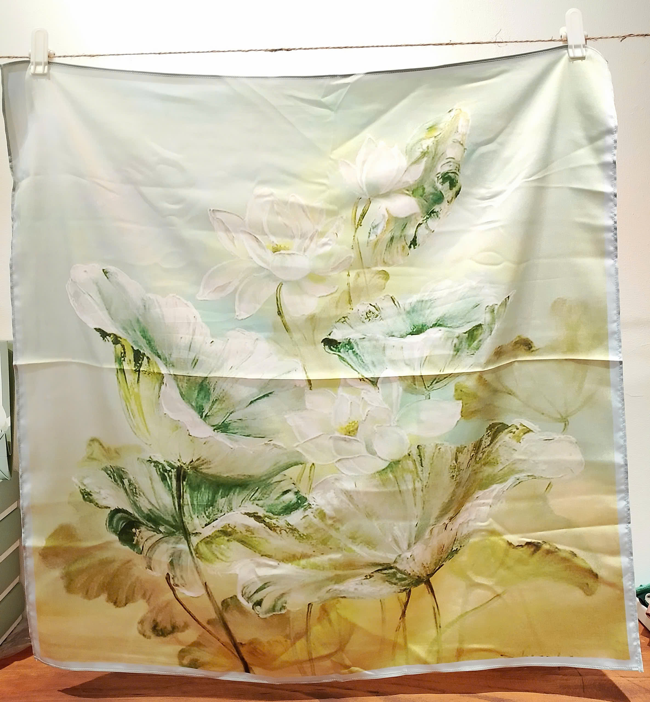
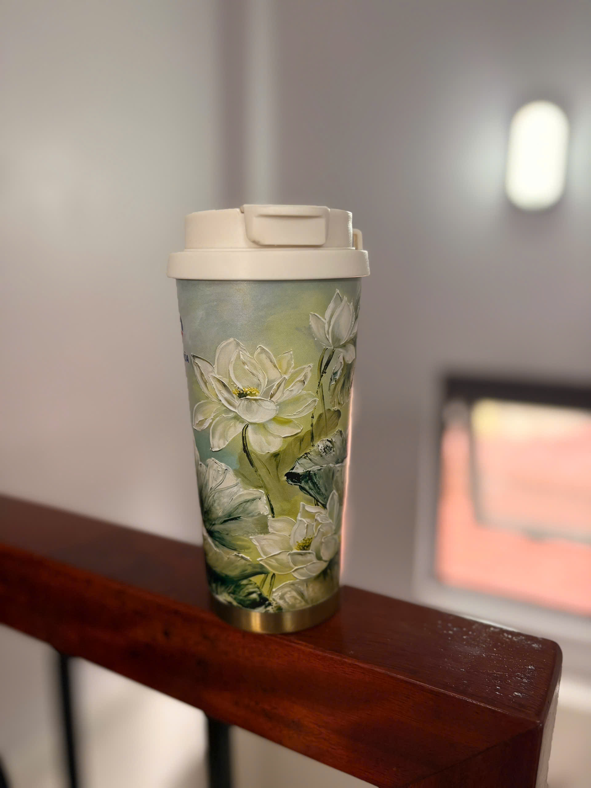
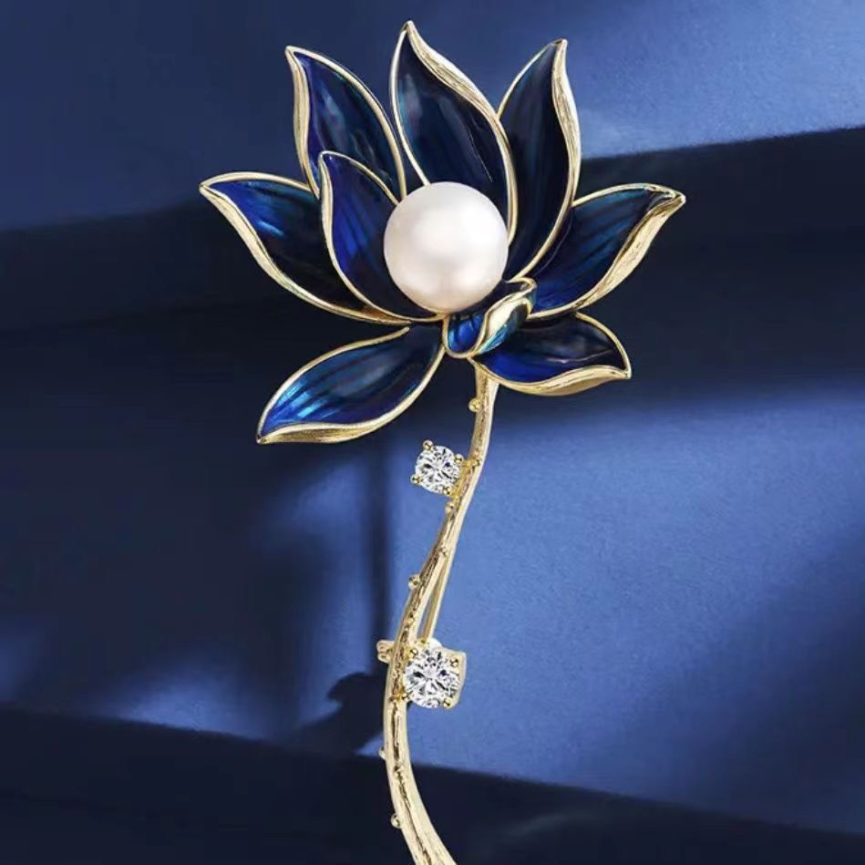
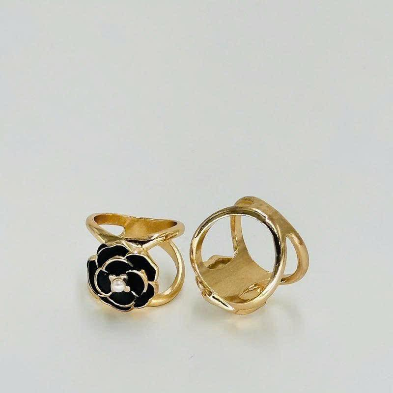
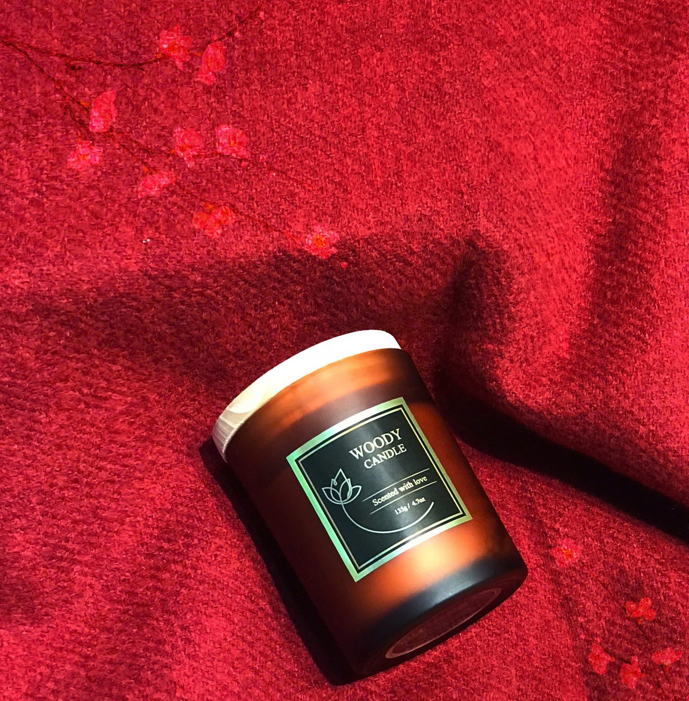

Khám Phá Bộ Sưu Tập
Mỗi bộ sưu tập là một câu chuyện tình cảm được gửi gắm trọn vẹn. Hãy cùng khám phá các sản phẩm của Vòng Tròn Xanh

Khăn Lụa
Những chiếc khăn lụa thiết kế đặc biệt tinh tế và độc quyền.
Khám phá ngay ➝
Bình Giữ Nhiệt
Sản phẩm bình giữ nhiệt đảm bảo an toàn và chất lượng. Có các thiết kế bình đa dạng, in ấn logo thương hiệu theo yêu cầu.
Khám phá ngay ➝
Cài Áo Cao Cấp
Các mẫu cài áo cao cấp, trang trọng thiết kế phù hợp cho từng set quà của bạn.
Khám phá ngay ➝
Cài Khăn
Các mẫu cài khăn cao cấp, trang trọng thiết kế phù hợp cho từng set quà của bạn.
Khám phá ngay ➝
Chanh Sành
Chanh Sành từ Vườn An được một người bạn thân thiết của Vòng Tròn Xanh phân phối. Chúng mình đã thổi thêm vào đó chút tình yêu, chút sáng tạo để phối hợp thành set quà An - Thương - Khoẻ.
Khám phá ngay ➝
Nền Thơm
Tạm gác lại những ồn ào vội vã, hãy để bộ sưu tập nến thơm thủ công của Vòng Tròn Xanh dẫn dắt bạn vào một không gian của sự bình yên. Mỗi nốt hương là một liệu pháp xoa dịu tâm hồn, khơi gợi những cảm xúc thuần khiết nhất.
Khám phá ngay ➝
Soap
Giữ trọn vẻ đẹp thanh tao của hoa sen sương sớm. Sự hòa quyện tuyệt vời giữa bơ hạt mỡ, dầu olive và đất sét hồng thiên nhiên tạo ra lớp bọt xốp mịn như tơ. Bánh xà bông nhẹ nhàng ôm ấp làn da bằng một mùi hương nữ tính, ngọt dịu, giúp xoa dịu đi mọi mệt mỏi và âu lo sau một ngày dài bận rộn.
Khám phá ngay ➝